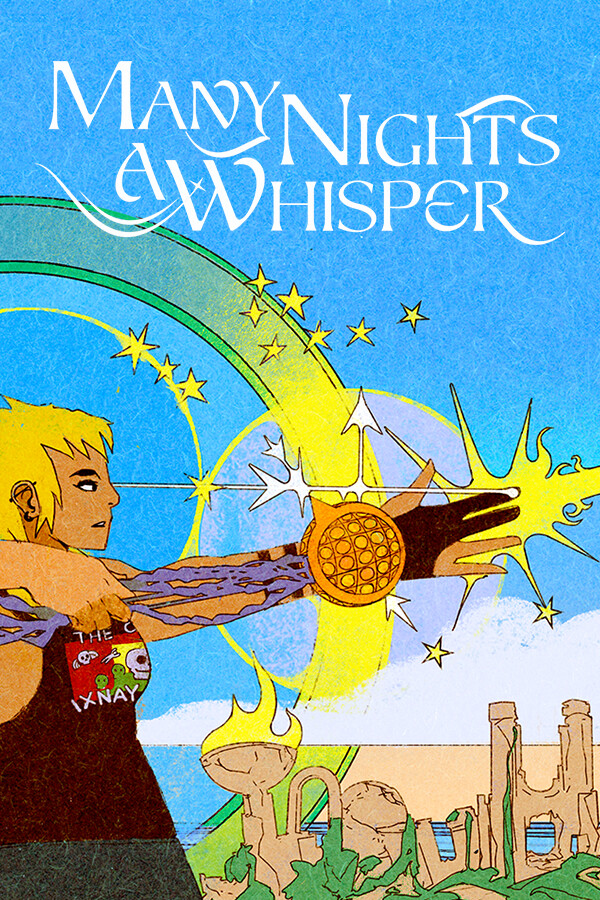

Many Nights a Whisper
Every archived year-end list appearance, including placement and points earned.
About the Game
Ten years ago, you were chosen to perform a ritual.Many Nights a Whisper is a meditative third-person archery game. Under the gentle guidance of your mentor, you will train to land an impossibly distant shot. Practice tirelessly, honing your skill for the sacred ceremony that will shape the future of your people. Succeed, and their wishes will come true, bringing a decade of prosperity. Should you fail, ten years of calamity will follow, and their hopes will be lost to the winds.Ah, and you only have one shot.No pressure.Short and thought-provokingPlaytime: 50-75 minutes. Delve into the routine of the Dreamer, the person chosen to perform this critical ceremony. Engage with your mentor in warm and intimate discussions. Listen to the townsfolk at the Confession Wall, weigh their whispers, and decide whether to grant their wishes.Test your marksmanshipMaster the sacred slingshot, a mystical device strung with human hair. Carefully aim, adjust for distance, and land fireballs into ancient chalices scattered across a ruin-sewn archipelago.Dreamy SoundscapeImmerse yourself in the soothing sounds of the Mediterranean Sea, accompanied by a mesmerizing soundtrack composed by fingerspit.Magical EnvironmentEnjoy a distinctive art direction through low-poly 3d and vibrant pixel-art textures—a relaxing yet melancholic archipelago filled with imagery inspired by Iberian culture.
| Released | 2025-04-29 |
|---|---|
| Developer | Deconstructeam, Selkie Harbour |
| Publisher | Deconstructeam |
| Genres | Casual, Indie |
| Platforms | PC |
SingleplayerSteam AchievementsFull controller supportSteam CloudAtmosphericStory RichThird PersonFemale ProtagonistPixel GraphicsThird-Person ShooterShortColorful
Where to Buy
Game information provided by RAWG.
Points by Year
List History
| Year | Source | List | Placement | Points |
|---|---|---|---|---|
| 2025 | Inverse | The 25 Best Games Of 2025, Ranked | 15 | 3 |
| 2025 | NPR | The best games of 2025, picked by NPR's staff | Unranked | 1 |